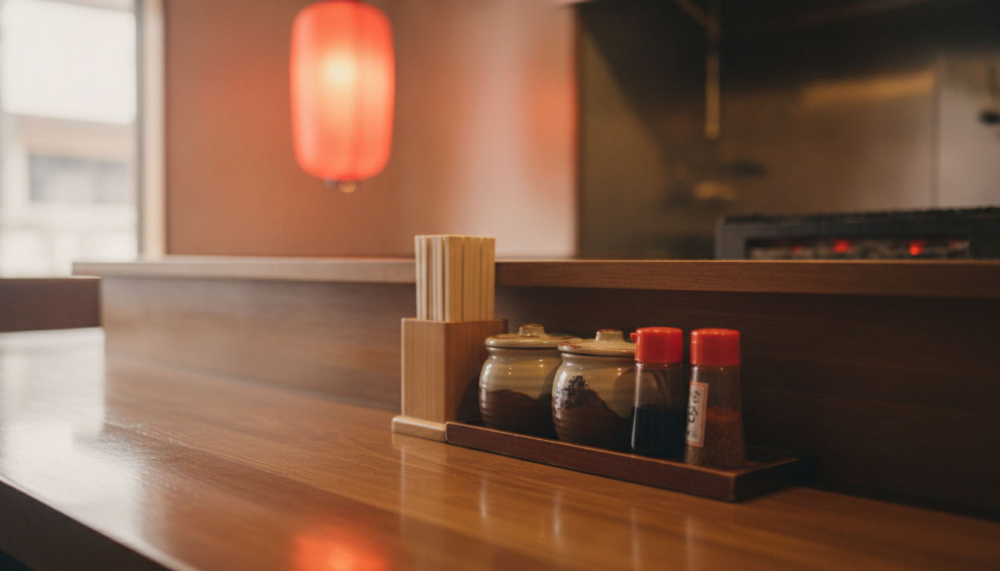

焼き鳥
炭火で香ばしく焼き上げる、看板の焼き鳥。一本ずつ、丁寧に。
YAKITORI — KAMIFUKUOKA
炭火の焼き鳥と、たっぷりの一品。
上福岡で、マスターとママの焼き鳥屋です。
木曜定休 ／ 17:00–24:00
※画像はイメージです
ABOUT
上福岡駅の北口から歩いて3分ほど。マスターとママのおふたりで営む、昔ながらの焼き鳥屋です。炭火で焼く焼き鳥に、たっぷりの一品料理とお酒。一人でも、気の合う仲間とでも。
「お酒、料理共に美味しく、量が多い」「1人でも複数人で来ても楽しませてくれます」——クチコミでも、そんな声の集まる、地元で親しまれているお店です。

一人でも、みんなでも。
※画像はイメージです
SHOP INFO
| 店名 | 大興（たいこう） |
|---|---|
| 住所 | 埼玉県ふじみ野市上福岡1-14-28 |
| アクセス | 上福岡駅 北口 徒歩約3分 |
| 営業時間 | 17:00–24:00 |
| 定休日 | 木曜 |
| 電話 | 049-261-6564 |